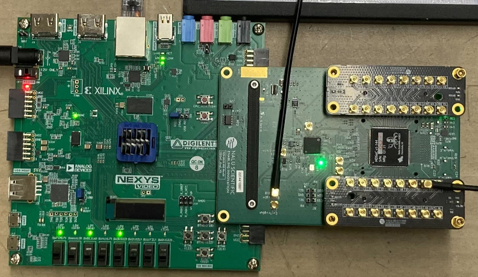

Welcome to the ATAR DAQ Manual

The purpose of this manual is to aid users with setup, usage, and debugging of the ATAR data acquisition (DAQ) system. This DAQ's purpose is to be used for readout of the Nalu's HDSoC FMC boards (and possibly other boards). Most topics are simplified to only include information needed for operating this DAQ. Some external links are provided for additional, generalized information.
Many of the guides on this webpage are thorough, as they are aimed to give solutions to problems I've encountered. However, every system is different; there may be some additional debugging to be done on the user's end.
PDF Version
A pdf version of this manual is automatically generated using MkDocs with pdf plugin.
Contact
Manual Written by Jack Carlton.
Ph.D. Candidate, Department of Physics and Astronomy, University of Kentucky.
Email: j.carlton@uky.edu
GitHub: jaca230
Feel free to reach out with any questions, to correct mistakes, point out missing information, or otherwise. Feel free to contribute additional information on github or otherwise.
Hardware
General Hardware Overview
Conceptual Diagram

- Trigger Signal: An external signal to tell the board when to digitize the input waveforms. Should be LVCMOS25 (0-2.5V) with width 10-100 ns.
- Waveforms: Analog signal to be digitized. Should be LVCMOS25 (0-2.5V). Max width is 1984 nanoseconds by default, but this depends on the sampling rate (default 1Gsps).
- HDSoC: Digitization board that handles inputs across multiple channels. Can be set to trigger on external or internal (self) signals.
- Nexys Video Artix-7 FPGA: Acts as a parent board to the HDSoC. Handles 1GbE communication and firmware storage among other things.
- Desktop: Receives and processes events that are effectively streamed from the digitization system.
Labled Picture

1GbE NIC (Gigabit Ethernet Network Interface Card)
Overview
These NICs are generally PCIe Cards that are "plug and play". They provide a 1 gigabit per second ethernet connection for the host computer.
Configuration
If you machine has a GUI, you may find it easier to edit network settings that way. Otherwise, you can edit settings from command line. For example for UKY's teststand we use:
nmcli connection modify enp3s0 \
ipv4.addresses 192.168.1.1/24 \
ipv4.method manual \
connection.autoconnect yes \
ipv6.method ignore
You may need to create a connection configuration file first if it doesn't exist. For example for UKY's teststand we use:
nmcli connection add type ethernet con-name enp3s0 ifname enp3s0
In particular, the ipv4.addresses is important. Here the port is specified to accept any traffic on the 192.168.1.xxx subnet. See the networking page for more details.
Nexys A7 Video Card
Overview
The Nexys A7 is a versatile and high-performance FPGA development board from Digilent, featuring the Xilinx Artix-7 FPGA. It is like the "mother board" for the HDSoC. For this use case it will provide power, an interface to update firmware, and an interface for data transfer. You can read more about this board on diligent's Nexys Video Artix-7 FPGA page.
FMCs
HDSoC
The HDSoC (or other nalu board) connects to the FPGA board via an FMC connector. See HDSoCv1 rev 2 for more info.
Wired Connections
USB A to microUSB
A USB A to microUSB can be used for UART communication. This can be used for data transfer via UART (very slow, limited to ~100 KB/s) and uploading firmware to the board. See the hardware diagram for port locations.
1GbE Connection
Connect an ethernet cable between the board and a host desktop computer. Most modern ethernet cables should work. See the hardware diagram for port locations.
Configuration
To congfigure the board, the appropriate firmware must be uploaded to it. This can be retrieved from nalu scientific's board downloads page. There are several options, the easiest two are:
- Use microSD card with loaded firmware (see HDSoC quickstart guide)
- Upload the firmware via Vivado
Steps to complete step 2 are below.
Downloading the firmware
Navigate to Nalu Scientific's support website. Go to the page for the HDSoCv1-evalr2 (or appropriate board). Download the most recent firmware version. This DAQ has been tested with firmware version 938. The file should be something like HDSoC_eval_v938.bit.
Downloading Vivado
Note: Vivado may take a long time to install because it is a very large program. This step could take serveral hours. A full Vivado installation can be around 200 GB. Below is a "minimal" installation that is ~50GB
The easiest way to upload firmware to the board is via Vivado. Download the most recent version of Vivado for your system from Xilinx's download page. You will need to make an account with AMD to install. This is easiest on a machine with a GUI. For a simple install follow these steps:
- Run installer. On linux run the bin file with
/path/to/.../installer.bin. - On the welcome page, hit next
- Enter credentials, download and install now, hit next
- Under products to install select Vivado, hit next
- For customizing the installation.
- Under "Design Tools" select only "Vivado Design Suite"
- Under "Devices" select only "Production Devices">"7 Series"
- Under "Installation Options", make sure you have "Install Cable Drivers" selected. Hit next.
- Agree to License agreements, hit next.
- Select which directory to install to. Hit next. Begin installation.
Uploading Firmware
Once Vivado is installed run it. On linux you may need to source the settings file with source /path/to/.../Xilinx/Vivado/202x.x/settings64.sh, then you can run the command vivado to launch vivado.
A new project needs to be created. This can be a "dummy" project since we're just uploading firmware. Step 1 of this guide gives all the details needed to creatae new project.
To load firmware onto the Nexys A7 using Vivado, plug the USB A to microUSB connection into the program port of the Nexys A7 board. See the hardware diagram for port locations. Follow these steps to upload firmware such that it persists when the board reboots:
- Open Vivado Hardware Manager and Connect to the Board
- Open Vivado and go to Tools > Hardware Manager. Hardware Manager should also be visible on the left sidebar of the project page.
-
In the Hardware Manager window, click Open Target and select Auto Connect or choose the appropriate JTAG or USB connection to connect to your board. If the board is connected properly, Vivado should automatically detect it.
-
Convert the Bitstream to a Binary File To program the flash, you need to convert the bitstream to a binary file. Nalu provides a
.bitfiles, but we can convert the.bitfile into a.binfile. Here’s how you can do it: -
After the bitstream is generated, open a the TCL Console (Window>Tcl Console) and use the following command to generate the
.binfile from the.bitfile:bash write_flash -force -file /path/to/output/firmware.bin -bitstream /path/to/input/firmware.bitReplace the paths with the appropriate file locations for your system.
Example:
bash write_flash -force -file /home/pioneer/vivado_stuff/Nexsys_Video_A7_For_HDSoc/HDSoC_eval_v938.bin -bitstream /home/pioneer/vivado_stuff/Nexsys_Video_A7_For_HDSoc/HDSoC_eval_v938.bit -
Add Configuration Memory Device Once the
.binfile is ready, go back to the Hardware Manager in Vivado and: -
Right-click on your connected device in the Devices pane (in the Hardware Manager).
- Click Add Configuration Memory Device.
- In the dialog box, select the appropriate part for your flash device. For the Nexys A7, the part number will likely be something like S25FL256Sxxxxxx0-SPI-x1_x2_x4.
-
Click OK to confirm.
-
Program the Flash Memory After selecting the configuration memory device:
-
Vivado will prompt you to program the flash memory.
- Select the firmware
.binfile you generated earlier. -
Click Program to start the flashing process. The process will take some time depending on the size of your firmware file and the connection speed.
-
Power Cycle the Device After programming is complete, power down the device and power it back on. Once powered on, you should see indicators (such as green lights on the HDSoC board) signaling that the firmware has been loaded successfully.
HDSoCv1 rev 2
Overview
The HDSoC is a high density digitizer system on a chip evaluation board. It provides a flexible digitization system. The high density part makes it appealing to for use in the ATAR DAQ, as the ATAR will have thousands of channels. You can read more in the HDSoC product sheet or on Nalu Scientific's HDSoC page.
Wired Connections
MMCX connector
The HDSoC's inputs (channel inputs and external trigger) and outputs (external trigger output) use a MMCX connectors. See the labeled picture and conceptual diagram to see where these inputs are on the board.
Configuration
See the HDSoC quickstart guide. You don't need to worry about using the SD card to boot the firmware if you've already uploaded it.
General Sofware Overview
Software Dependency Diagram
 Note: an SVG version of this diagram with links to each repository is avaiable here.
Note: an SVG version of this diagram with links to each repository is avaiable here.
{kind=link}
Software Data and Control Flow Diagram

- Ethernet Controller: The systems ethernet controller which sockets are formed on.
- UDP Socket: Two sockets are constructed. One by naludaq python package to communicate with the board. And one by the UDP receiver to receive data.
- Nalu Event Collector: A library to collect events from a UDP socket receiving events from a nalu scientific board
- UDP Buffer: Receives UDP packets and puts them in a buffer to be processed.
- Event Buffer: Processes UDP packets into events and puts them in a buffer.
- Event Collector Manager: Manages interfacing with the buffers. I.e. getting data, configuration, etc.
- Nalu Board Controller: C++ methods to configure the nalu scientific board to prepare for data taking.
- C++ pybind wrapper: C++ wrapper around some methods from the naludaq python package.
- Board Controller Manager: Manages interfacing with the board from another C++ program.
- Midas Frontend: Handles run control, configuration via ODB, data bank creation, etc. Interfaces with the board controller and event collector.
- Event Builder: Builds events from data banks provided by potentially multiple frontends. Not necessary if only using one frontend.
ATAR_DAQ
Overview
The ATAR DAQ software is a midas frontend that interfaces with several other softwares (see software dependencies page) to read out events from a nalu scientific board while working within the midas framework.
Installation
Make sure you have installed the development tools, python packages, and midas before continuing. Furthmore, make sure you have set-up access to the pioneer experiment repository first.
1 Clone the repository:
git clone git@github.com:PIONEER-Experiment/atar_daq.git
2 Set up the enviromment
cd atar_daq/scripts/environment_setup
./detect_environment.sh
environment_variables.txt should have been generated. Check it to make sure it contains the write paths, for example, mine looks like this:
MIDASSYS=/home/pioneer/packages/midas
MIDAS_EXPTAB=/home/pioneer/packages/online/exptab
MIDAS_EXPT_NAME=ATAR_DAQ
ATAR_DAQ_DIR=/home/pioneer/packages/experiments/atar_daq
For more information on what the correct paths should look like, check TRIUMF's midas quickstart guide.
After verifying the paths are correct:
source ./setup_environment.sh --add
Note: If you want this environment to be setup everything a user logs in on your profile, add it to your bashrc with:
echo 'source /path/to/.../atar_daq/scripts/environment_setup/setup_environment.sh --add --quiet' >> ~/.bashrc
replacing the above with the correct path to the script.
3 Installed additionally dependencies:
These are the dependencies neeeded to build this software. The aforementioned dependencies are more general.
$ATAR_DAQ_DIR/scripts/install_libraries/install_dependencies.sh
4 Build
$ATAR_DAQ_DIR/scripts/build.sh --overwrite
Running
Starting a Midas Webpage
Midas provides a great user interface via their webpage. To start it, use the helper script:
$ATAR_DAQ/scripts/webpage_scripts/start_midas_webpage.sh
Then navigate to localhost:8080 in your favorite web browser.
Note: For some reason, this script may need to be run twice sometimes for it to work properly.
Note: If the webpage doesn't appear, manually run mhttpd to debug the error output
Manually Starting the Frontend
I recommend doing this the first time to make sure everything is working properly.
$ATAR_DAQ_DIR/scripts/run.sh
Starting the Frontend as a Screen
Use the screening helper script
$ATAR_DAQ_DIR/scripts/screen_control/screen_frontend.sh -i {index}
Note: Exclusing -i flag will set the index to 0. This is the frontend index to support running multiple frontends.
to stop the screen
$ATAR_DAQ_DIR/scripts/screen_control/stop_screen.sh -i {index}
Starting the Frontend as Midas Program
See the g-2 modified DAQ Manual's guide for adding program startup scripts. For the start command, use the screen command above.
Configuration
See the ODB configuration page for a description of each ODB setting.
Software Dependencies
PIONEER Repository
Some installations are on the PIONEER repository, which requires access to pull from. See how to get access.
Development Tools
Overview
These tools include compilers, libraries, and other utilities that facilitate software development and installation.
Installation Guide
This guide should work for ALMA9. You can use dnf for ALMA9, but I prefer to work with yum
1 Install yum package manager
sudo dnf install yum
2 Update the package index:
sudo yum update
3 Enable the EPEL repository:
sudo yum install epel-release
4 Install Development Tools and Dependencies:
sudo yum groupinstall "Development Tools"
sudo yum install cmake gcc-c++ gcc screen subversion binutils libX11-devel libXpm-devel libXft-devel libXext-devel
5 Install Python3
sudo yum install python3-devel
6 Install CMake from Source
If the installed CMake version is not >=3.23, (you can check with cmake --version) follow these steps to install CMake manually:
6.1. Remove Old CMake (If Installed)
sudo yum remove -y cmake
Verify removal:
cmake --version # Should return "command not found"
6.2. Install Required Dependencies
sudo yum groupinstall -y "Development Tools"
sudo yum install -y gcc gcc-c++ make openssl-devel
6.3. Download and Install the Latest CMake from Source
-
Download the latest version (Check Kitware's website for the latest version):
wget https://github.com/Kitware/CMake/releases/download/v3.29.0/cmake-3.29.0.tar.gz -
Extract the archive:
tar -xvzf cmake-3.29.0.tar.gz cd cmake-3.29.0 -
Build and install:
./bootstrap make -j$(nproc) sudo make install -
Verify the New Installation:
cmake --version
Python Packages
Overview
Although this DAQ is written mostly in C++, it interfaces with with Nalu Scientific's "naludaq" package, which is a python module used for interfacing with the board. However, our use case requires C++. To avoid rewriting all of Nalu Scientific's methods in C++, pybind is used to wrap some C++ methods around existing naludaq python methods.
Installation Guide
Install any needed packages with pip. Two that are needed are:
pip install pybind11 naludaq
ROOT
Overview
ROOT is an open-source data analysis framework developed by CERN. It is widely used in high-energy physics for data processing, statistical analysis, visualization, and storage. It is needed for some features of Midas.
Installation Guide
General installaiton guides are provided by ROOT at their Installing ROOT and Building ROOT from source pages.
Using yum Package Manager
1 Enable the EPEL repository:
sudo yum install epel-release
2 Download and Install ROOT:
sudo yum install root
Building from source
1 Example building latest stable branch from source
git clone --branch latest-stable --depth=1 https://github.com/root-project/root.git root_src
mkdir root_build root_install && cd root_build
cmake -DCMAKE_INSTALL_PREFIX=../root_install ../root_src # && check cmake configuration output for warnings or errors
cmake --build . -- install -j4 # if you have 4 cores available for compilation
source ../root_install/bin/thisroot.sh # or thisroot.{fish,csh}
Note: Adjust the ROOT version and the download URL as needed. Always check for the latest version on the official ROOT website. Furthermore, if you are not building from source you are installing precompiled binaries, which may not be up to date versions of ROOT. For specific versions, you may need to build root from source.
Midas
Overview
Midas is a data acquisition system used in high-energy physics experiments. Midas provides the following functionalities:
- Run control
- Experiment configuration
- Data readout
- Event building
- Data storage
- Slow control
- Alarm systems
- ... much more ...
Installation Guide
For a general Midas installation, you can follow this Linux Quick Start Guide. For the g-2 modified DAQ, we use a custom version of midas, which can be cloned and installed as follows:
1 Set experiment name environment variable
export MIDAS_EXPT_NAME=DAQ
2 Create exptab file
mkdir online
cd online
touch exptab
echo "$MIDAS_EXPT_NAME $(pwd) system" >> exptab
export MIDAS_EXPTAB=$(pwd)/exptab
3 Install Midas
cd ..
mkdir packages
git clone --recursive git@github.com:PIONEER-Experiment/midas-modified.git midas
cd midas
mkdir build
cd build
cmake ..
make -j$(nproc) install
cd ..
4 Set MIDASSYS environment variable and add to path
export MIDASSYS=$(pwd)
export PATH=$PATH:$MIDASSYS/bin
Note: you can hardcode the environment variables MIDASSYS (and add to path), MIDAS_EXPTAB, and MIDAS_EXPT_NAME by adding the appropriate commands to your .bashrc file. This way, the environment variables are set with each new terminal session for that user.
5 (Optional) it is recommended to also install the midas python package:
pip install -e $MIDASSYS/python --user
Nalu Board Controller
Overview
The Nalu Board Controller library is a C++ library that uses pybind to wrap around some existing naludaq python methods. It allows the midas frontend to use C++ methods to configure nalu scientific's boards. You can read more in on the github page for this library.
Installation Guide
This should be automatically installed when installing the ATAR DAQ midas frontend. If you want to manually install, see the installation guide on the github's readme.
Nalu Event Collector
Overview
The Nalu Event Collector library is a C++ library that handles event collection from a nalu scientific board at high data rates. It has been internally tested to handle data rates as high as 300 MB/s. The HDSoCv1 board can send at most ~55 MB/s (due to an internal hardware limit), so this software handles virtually all uses cases. The library can automatically handle collecting UDP packets from a nalu scientific board, parsing them, and collecting them into events. The library holds a buffer of these events that midas can pull from to form its own events. You can read more in on the github page for this library.
Installation Guide
This should be automatically installed when installing the ATAR DAQ midas frontend. If you want to manually install, see the installation guide on the github's readme.
reflect-cpp
Overview
Reflect-cpp is a C++ library that achieves some level of reflection in C++. For our use case, we just use it to convert C++ structs to json and json to C++ structs. This removes a lot of boiler plate code that would otherwise go into the ODB management. You can read more in on the github page for this library.
Installation Guide
This should be automatically installed when installing the ATAR DAQ midas frontend. If you want to manually install, see reflect-cpp's installation guide. I suggest compiling using cmake.
Midas' Online Data Base Configuration Parameters
ODB Basics
See the g-2 modified DAQ's ODB Basics section for some general midas ODB settings.
ATAR DAQ specific ODB Configuration
Nalu Event Collector
Absolute Window Mask
| Field | Description |
|---|---|
| Path | /Equipment/HDSoC-{frontend #}/Settings/nalu_event_collector/nalu_packet_parser/abs_wind_mask |
| Description | Bit mask on the absolute window position bits |
| Valid Values | any bit mask (ex. 63 = 0x3F = `0011 1111) |
| Suggested Value | 63 |
Channel Mask
| Field | Description |
|---|---|
| Path | /Equipment/HDSoC-{frontend #}/Settings/nalu_event_collector/nalu_packet_parser/chan_mask |
| Description | Bit mask on the channel index bits |
| Valid Values | Any bit mask (ex. 63 = 0x3F = `0011 1111) |
| Suggested Value | 63 |
Channel Shift
| Field | Description |
|---|---|
| Path | /Equipment/HDSoC-{frontend #}/Settings/nalu_event_collector/nalu_packet_parser/chan_shift |
| Description | Global shift in channel indices |
| Valid Values | Any positive integer |
| Suggested Value | 0 |
Check Packet Integrity
| Field | Description |
|---|---|
| Path | /Equipment/HDSoC-{frontend #}/Settings/nalu_event_collector/nalu_packet_parser/check_packet_integrity |
| Description | Whether or not each recieved UDP packet should be checked to see if it matches the expected format |
| Valid Values | yes or no |
| Suggested Value | yes |
Note: You can get slight performance improvement by setting this to no. However, the performance with it set to yes should be good enough to handle any data rate the HDSoC can achieve.
Constructed Packet Footer
| Field | Description |
|---|---|
| Path | /Equipment/HDSoC-{frontend #}/Settings/nalu_event_collector/nalu_packet_parser/constructed_packet_footer |
| Description | Footer bytes for packets constructed. Potentially useful to consumer programs looking for a specific byte sequence. |
| Valid Values | Any 4 byte unsigned integer |
| Suggested Value | 65535 |
Constructed Packet Footer
| Field | Description |
|---|---|
| Path | /Equipment/HDSoC-{frontend #}/Settings/nalu_event_collector/nalu_packet_parser/constructed_packet_header |
| Description | Header bytes for packets constructed. Potentially useful to consumer programs looking for a specific byte sequence. |
| Valid Values | Any 4 byte unsigned integer |
| Suggested Value | 43690 |
Event Window Mask
| Field | Description |
|---|---|
| Path | /Equipment/HDSoC-{frontend #}/Settings/nalu_event_collector/nalu_packet_parser/evt_wind_mask |
| Description | Bit mask on the event window position |
| Valid Values | Any bit mask (ex. 63 = 0x3F = `0011 1111) |
| Suggested Value | 63 |
Event Window Shift
| Field | Description |
|---|---|
| Path | /Equipment/HDSoC-{frontend #}/Settings/nalu_event_collector/nalu_packet_parser/evt_wind_shift |
| Description | Global shift on event window values |
| Valid Values | Any positive integer |
| Suggested Value | 6 |
Packet Size
| Field | Description |
|---|---|
| Path | /Equipment/HDSoC-{frontend #}/Settings/nalu_event_collector/nalu_packet_parser/packet_size |
| Description | How big one "packet" of channel information is |
| Valid Values | Any positive integer |
| Suggested Value | 74 |
Start marker
| Field | Description |
|---|---|
| Path | /Equipment/HDSoC-{frontend #}/Settings/nalu_event_collector/nalu_packet_parser/start_marker |
| Description | Start marker a packet of channel information |
| Valid Values | Any string representation of hexidecimal |
| Suggested Value | 0E |
Stop marker
| Field | Description |
|---|---|
| Path | /Equipment/HDSoC-{frontend #}/Settings/nalu_event_collector/nalu_packet_parser/stop_marker |
| Description | Stop marker a packet of channel information |
| Valid Values | Any string representation of hexidecimal |
| Suggested Value | FA5A |
Timing Mask
| Field | Description |
|---|---|
| Path | /Equipment/HDSoC-{frontend #}/Settings/nalu_event_collector/nalu_packet_parser/timing_mask |
| Description | Bit mask on timing information |
| Valid Values | Any string representation of hexidecimal |
| Suggested Value | 4095 |
Timing Shift
| Field | Description |
|---|---|
| Path | /Equipment/HDSoC-{frontend #}/Settings/nalu_event_collector/nalu_packet_parser/timing_shift |
| Description | Global shift in timing information |
| Valid Values | Any positive integer |
| Suggested Value | 12 |
UDP buffer size
| Field | Description |
|---|---|
| Path | /Equipment/HDSoC-{frontend #}/Settings/nalu_event_collector/nalu_udp_receiver/buffer_size |
| Description | Number of bytes in the UDP buffer before it throws an overflow error |
| Valid Values | Any positive integer |
| Suggested Value | 104857600 |
UDP buffer size
| Field | Description |
|---|---|
| Path | /Equipment/HDSoC-{frontend #}/Settings/nalu_event_collector/nalu_udp_receiver/max_packet_size |
| Description | Max number of bytes in a UDP packet that the UDP receiver will consider |
| Valid Values | Any positive integer |
| Suggested Value | 1040 |
UDP Timeout
| Field | Description |
|---|---|
| Path | /Equipment/HDSoC-{frontend #}/Settings/nalu_event_collector/nalu_udp_receiver/timeout_sec |
| Description | Number of seconds the UDP thread will wait before quitting due to timeout |
| Valid Values | Any positive integer |
| Suggested Value | 3 |
Event Header
| Field | Description |
|---|---|
| Path | /Equipment/HDSoC-{frontend #}/Settings/nalu_event_collector/nalu_event_builder/event_header |
| Description | Header for each constructed event. Potentially userful for consumer programs looking for specific byte sequences. |
| Valid Values | Any non-negative 4 byte integer |
| Suggested Value | 48059 |
Event Trailer
| Field | Description |
|---|---|
| Path | /Equipment/HDSoC-{frontend #}/Settings/nalu_event_collector/nalu_event_builder/event_trailer |
| Description | Header for each constructed event. Potentially userful for consumer programs looking for specific byte sequences. |
| Valid Values | Any non-negative 4 byte integer |
| Suggested Value | 61166 |
Max Event in the Event Buffer
| Field | Description |
|---|---|
| Path | /Equipment/HDSoC-{frontend #}/Settings/nalu_event_collector/nalu_event_builder/max_events_in_buffer |
| Description | Maximum number of events in the buffer. Should be set to a within the total RAM constraints of your system. |
| Valid Values | Any positive integer |
| Suggested Value | 50000 |
Max Lookback
| Field | Description |
|---|---|
| Path | /Equipment/HDSoC-{frontend #}/Settings/nalu_event_collector/nalu_event_builder/max_lookback |
| Description | Maximum number of events the event builder will retroactively look back at to try to find a match for a packet. |
| Valid Values | Any positive integer |
| Suggested Value | 2 |
Note: Look backs only occur "shortly" after new events begin just in case packets are received out of order. See this file if you're curious.
Max Trigger Time
| Field | Description |
|---|---|
| Path | /Equipment/HDSoC-{frontend #}/Settings/nalu_event_collector/nalu_event_builder/max_trigger_time |
| Description | The maximum number of clock ticks the board will report before restarting at 0. |
| Valid Values | Any positive integer |
| Suggested Value | 16777216 |
Time Threshold
| Field | Description |
|---|---|
| Path | /Equipment/HDSoC-{frontend #}/Settings/nalu_event_collector/nalu_event_builder/time_threshold |
| Description | The maximum number of clock ticks two packets can be seperated by and still be considered part of the same event |
| Valid Values | Any positive integer |
| Suggested Value | 500 |
Note: If this is set too high or too low, events will stop forming and the frontend will crash. For most use cases, 500 is fine. For the HDSoC `there are about 23843000 clock ticks a second.
Nalu Board Controller
Channel DAC Value
| Field | Description |
|---|---|
| Path | /Equipment/HDSoC-{frontend #}/Settings/nalu_board_controller/nalu_capture/channels/{channel_index}/dac_value |
| Description | The digital analog converter value for the channel |
| Valid Values | Any non-negative integer |
| Suggested Value | 0 |
Channel Enabled
| Field | Description |
|---|---|
| Path | /Equipment/HDSoC-{frontend #}/Settings/nalu_board_controller/nalu_capture/channels/{channel_index}/enabled |
| Description | Whether that channel is enabled for readout |
| Valid Values | yes or no |
| Suggested Value | yes |
Channel Trigger Value
| Field | Description |
|---|---|
| Path | /Equipment/HDSoC-{frontend #}/Settings/nalu_board_controller/nalu_capture/channels/{channel_index}/trigger_value |
| Description | The threshold used for the internal or self triggering mode |
| Valid Values | Any non-negative integer |
| Suggested Value | 0 |
Assign DAC Values
| Field | Description |
|---|---|
| Path | /Equipment/HDSoC-{frontend #}/Settings/nalu_board_controller/nalu_capture/assign_dac_values |
| Description | Whether the DAQ values are assigned and used by the board |
| Valid Values | yes or no |
| Suggested Value | no |
Digitization Lookback
| Field | Description |
|---|---|
| Path | /Equipment/HDSoC-{frontend #}/Settings/nalu_board_controller/nalu_capture/lookback |
| Description | The number of windows (32 samples) to "look back" after digitizing "write after trigger" more windows. |
| Valid Values | any positive integer between 1 and 62 (for the HDSoC) |
| Suggested Value | 4 |
Note: See page 18 of the NaluScope manual for a better explanation of the lookback parameter
Digitization Lookback Mode
| Field | Description |
|---|---|
| Path | /Equipment/HDSoC-{frontend #}/Settings/nalu_board_controller/nalu_capture/lookback_mode |
| Description | The number of windows (32 samples) to "look back" after digitizing "write after trigger" more windows. |
| Valid Values | forced, trig or empty (empty defaults to trig) |
| Suggested Value | "" |
Note: See page 17 of the NaluScope manual for a better explanation of the lookback mode parameter
Target IP Port
| Field | Description |
|---|---|
| Path | /Equipment/HDSoC-{frontend #}/Settings/nalu_board_controller/nalu_capture/target_ip_port |
| Description | The IP address (with port) that the board will send data to over 1GbE |
| Valid Values | any valid IP with port |
| Suggested Value | 192.168.1.1:12345 |
Trigger Mode
| Field | Description |
|---|---|
| Path | /Equipment/HDSoC-{frontend #}/Settings/nalu_board_controller/nalu_capture/trigger_mode |
| Description | What trigger mode (external, self, or immediate) to use. External is from an external signal, self is based on a threshold for the channel, and immediate is automatic triggers as fast as possible. |
| Valid Values | ext, self, or imm |
| Suggested Value | ext |
Digitization Windows
| Field | Description |
|---|---|
| Path | /Equipment/HDSoC-{frontend #}/Settings/nalu_board_controller/nalu_capture/windows |
| Description | The number of windows (32 samples) that will be digitized |
| Valid Values | any positive integer between 1 and 62 (for the HDSoC) |
| Suggested Value | 4 |
Note: See page 18 of the NaluScope manual for a better explanation of the windows parameter
Digitization Write After Trigger
| Field | Description |
|---|---|
| Path | /Equipment/HDSoC-{frontend #}/Settings/nalu_board_controller/nalu_capture/write_after_trig |
| Description | The number of windows (32 samples) to continue to digitize following the trigger event |
| Valid Values | any positive integer between 1 and 62 (for the HDSoC) |
| Suggested Value | 4 |
Note: See page 18 of the NaluScope manual for a better explanation of the write after trig parameter
Board IP
| Field | Description |
|---|---|
| Path | /Equipment/HDSoC-{frontend #}/Settings/nalu_board_controller/nalu_board/board_ip_port |
| Description | The IP address (with port) of the board. |
| Valid Values | Any valid IP and port |
| Suggested Value | 192.168.1.59:4660 |
Note: For the HDSoC, this is currently hardcoded to 192.168.1.59:4660. I.e. you cannot change this.
Board Clock File
| Field | Description |
|---|---|
| Path | /Equipment/HDSoC-{frontend #}/Settings/nalu_board_controller/nalu_board/clock_file |
| Description | Path to a clock file for the board |
| Valid Values | Any valid path or empty string |
| Suggested Value | "" |
Board Configuration File
| Field | Description |
|---|---|
| Path | /Equipment/HDSoC-{frontend #}/Settings/nalu_board_controller/nalu_board/config_file |
| Description | Path to a configuration file for the board |
| Valid Values | Any valid path or empty string |
| Suggested Value | "" |
Host IP
| Field | Description |
|---|---|
| Path | /Equipment/HDSoC-{frontend #}/Settings/nalu_board_controller/nalu_board/host_ip_port |
| Description | The IP address (with port) of the host. For communication with the board (not data). |
| Valid Values | Any valid IP |
| Suggested Value | 192.168.1.1:4660 |
Board Model
| Field | Description |
|---|---|
| Path | /Equipment/HDSoC-{frontend #}/Settings/nalu_board_controller/nalu_board/board |
| Description | The name of the board model used |
| Valid Values | Any valid board model, select from AARDVARCv3, HDSOCv1_evalr2, ASOCv3, AODSv2, TRBHM, AODSOC_AODS, AODSOC_ASOC, or UPAC32. However, only HDSOCv1_evalr2, ASOCv3, and TRBHM support UDP transfer. |
| Suggested Value | HDSOCv1_evalr2 |
Midas Parameters
Midas ATAR Data Bank Prefix
| Field | Description |
|---|---|
| Path | /Equipment/HDSoC-{frontend #}/Settings/midas_params/data_bank_prefix |
| Description | The 2 letter prefix for midas data bank containing event data |
| Valid Values | Any 2 letter string |
| Suggested Value | AD |
Note: Midas data banks can only be 4 characters. The first 2 characters we use for identification, the second 2 for indexing. So if there is 1 ATAR frontend, the data will be in AD00 for example.
Webpage Initializing Frontend Status Color
| Field | Description |
|---|---|
| Path | /Equipment/HDSoC-{frontend #}/Settings/midas_params/init_color |
| Description | The color the frontend status light will be while the frontend is initializing |
| Valid Values | Any 3 byte hex RGB value |
| Suggested Value | #8A2BE2 |
Logging Level
| Field | Description |
|---|---|
| Path | /Equipment/HDSoC-{frontend #}/Settings/midas_params/log_level |
| Description | The log level for information printed by the frontend software |
| Valid Values | debug, info, warn, error |
| Suggested Value | debug |
Note debug will show all output, info will show most ouput, warn will only show warnings and errors, error will only show errors.
Minimum Bytes to Trigger on
| Field | Description |
|---|---|
| Path | /Equipment/HDSoC-{frontend #}/Settings/midas_params/min_bytes_to_trigger_on |
| Description | The minimum bytes needed to be present in the UDP buffer before the midas thread will trigger collection |
| Valid Values | any non-negative integer |
| Suggested Value | 1000 |
Note: Higher values may see some performance gain, at the cost of events coming in batches
Polling Interval in Microseconds
| Field | Description |
|---|---|
| Path | /Equipment/HDSoC-{frontend #}/Settings/midas_params/polling_interval_us |
| Description | The minimum number of microseconds between two consecutive triggers |
| Valid Values | any non-negative integer |
| Suggested Value | 1000 |
Note: Higher values may see some performance gain, at the cost of events coming in batches
Webpage Ready Status Color
| Field | Description |
|---|---|
| Path | /Equipment/HDSoC-{frontend #}/Settings/midas_params/ready_color |
| Description | The color the frontend status light will be while the frontend is ready |
| Valid Values | Any 3 byte hex RGB value |
| Suggested Value | greenLight |
Midas ATAR Timing Bank Prefix
| Field | Description |
|---|---|
| Path | /Equipment/HDSoC-{frontend #}/Settings/midas_params/timing_bank_prefix |
| Description | The 2 letter prefix for midas data bank containing event data |
| Valid Values | Any 2 letter string |
| Suggested Value | AD |
Note: Midas data banks can only be 4 characters. The first 2 characters we use for identification, the second 2 for indexing. So if there is 1 ATAR frontend, the timing information will be in AT00 for example.
Scripts
Top Level
build.sh
| Field | Description |
|---|---|
| Path | $ATAR_DAQ_DIR/scripts/build.sh |
| Description | Builds the project using CMake and Make. If the --overwrite flag is used, it cleans the previous build first. |
| Flags | -o, --overwrite → Remove the existing build directory before building. |
| Example Usage | ./build.sh ./build.sh --overwrite |
run.sh
| Field | Description |
|---|---|
| Path | $ATAR_DAQ_DIR/scripts/run.sh |
| Description | Runs the frontend executable. Supports running in background mode, with debugging, and setting an index. |
| Flags | --debug → Runs the executable in GDB. -i <number> → Specifies an index (default: 0). --help → Displays usage help. |
| Example Usage | ./run.sh ./run.sh --debug ./run.sh -i 2 |
Data management
delete_data.sh
| Field | Description |
|---|---|
| Path | $ATAR_DAQ_DIR/scripts/delete_data.sh |
| Description | Deletes MIDAS data files in the experiment directory. If --dry-run is used, it lists files without deleting them. |
| Flags | --dry-run → Lists files that would be deleted without removing them. |
| Example Usage | ./delete_data.sh ./delete_data.sh --dry-run |
find_data_dir.sh
| Field | Description |
|---|---|
| Path | $ATAR_DAQ_DIR/scripts/find_data_dir.sh |
| Description | Finds the experiment data directory and writes it to experiment_dir.txt. |
| Flags | (None) |
| Example Usage | ./find_data_dir.sh |
Environment Setup
clear_environment.sh
| Field | Description |
|---|---|
| Path | $ATAR_DAQ_DIR/scripts/environment_setup/clear_environment.sh |
| Description | Clears the MIDAS environment variables by unsetting MIDASSYS, MIDAS_EXPTAB, and MIDAS_EXPT_NAME. |
| Flags | (None) |
| Example Usage | ./clear_environment.sh |
detect_environment.sh
| Field | Description |
|---|---|
| Path | $ATAR_DAQ_DIR/scripts/environment_setup/detect_environment.sh |
| Description | Searches for the midas directory and exptab file, sets MIDASSYS, MIDAS_EXPTAB, and MIDAS_EXPT_NAME, and saves them to environment_variables.txt. |
| Flags | (None) |
| Example Usage | ./detect_environment.sh |
setup_environment.sh
| Field | Description |
|---|---|
| Path | $ATAR_DAQ_DIR/scripts/environment_setup/setup_environment.sh |
| Description | Reads environment_variables.txt to set environment variables and optionally adds MIDASSYS/bin to the PATH. |
| Flags | -a, --add → Adds MIDASSYS/bin to PATH if MIDASSYS is set. -q, --quiet → Suppresses all output. -h, --help → Displays usage help. |
| Example Usage | ./setup_environment.sh ./setup_environment.sh --add ./setup_environment.sh --quiet |
Install Libraries
install_dependencies.sh
| Field | Description |
|---|---|
| Path | $ATAR_DAQ_DIR/scripts/install_libaries/install_dependencies.sh |
| Description | Installs all required dependencies by calling their respective installation scripts. |
| Flags | (None) |
| Example Usage | ./install_dependencies.sh |
install_reflect_cpp.sh
| Field | Description |
|---|---|
| Path | $ATAR_DAQ_DIR/scripts/install_libaries/install_reflect_cpp.sh |
| Description | Installs the Reflect-C++ library, allowing customization of installation directory, C++ standard, and build type. |
| Flags | -o, --overwrite → Removes the previous build before installing. -p, --prefix <path> → Specifies the installation directory (default: /usr/local). -s, --cxx-standard <version> → Sets the C++ standard (default: 20). -b, --build-type <type> → Sets the build type (default: Release). |
| Example Usage | ./install_reflect_cpp.sh ./install_reflect_cpp.sh --overwrite ./install_reflect_cpp.sh --prefix /opt/custom ./install_reflect_cpp.sh --cxx-standard 17 --build-type Debug |
ODB
set_enabled_channels.py
| Field | Description |
|---|---|
| Path | $ATAR_DAQ_DIR/scripts/odb/set_enabled_channels.py |
| Description | Updates the enabled channels in the ODB by setting the number of enabled channels from the start (0) and disabling the rest. |
| Flags | num_enabled_channels → The number of enabled channels (between 0 and 32). |
| Example Usage | python3 set_enabled_channels.py 16 Enables the first 16 channels and disables the rest. |
Screen Control
screen_frontend.sh
| Field | Description |
|---|---|
| Path | $ATAR_DAQ_DIR/scripts/screen_control/screen_frontend.sh |
| Description | Starts a specified script inside a screen session, optionally passing an index value. |
| Flags | -i → Index for the session name (defaults to 0). |
| Example Usage | bash screen_frontend.sh -i 1 Starts the script run.sh inside a screen session with index 1. |
| Dependencies | screen (for managing screen sessions). |
stop_screen.sh
| Field | Description |
|---|---|
| Path | $ATAR_DAQ_DIR/scripts/screen_control/stop_screen.sh |
| Description | Stops a running screen session specified by the index. |
| Flags | -i → Index for the session name (defaults to 0). |
| Example Usage | bash stop_screen.sh -i 1 Stops the screen session with index 1. |
| Dependencies | screen (for managing screen sessions). |
Webpage Scripts
start_midas_webpage.sh
| Field | Description |
|---|---|
| Path | $ATAR_DAQ_DIR/scripts/webpage_scripts/start_midas_webpage.sh |
| Description | Starts processes in the background, each inside a screen session, using process names from a screen_names.txt file. |
| Flags | None. |
| Example Usage | bash start_midas_webpage.sh Starts all processes defined in screen_names.txt. |
| Dependencies | screen (for managing screen sessions), MIDASSYS environment variable must be defined. |
stop_midas_webpage.sh
| Field | Description |
|---|---|
| Path | $ATAR_DAQ_DIR/scripts/webpage_scripts/stop_midas_webpage.sh |
| Description | Stops processes running in screen sessions based on names listed in screen_names.txt. |
| Flags | None. |
| Example Usage | bash stop_midas_webpage.sh Stops all processes defined in screen_names.txt. |
| Dependencies | screen (for managing screen sessions), MIDASSYS environment variable must be defined. |
Miscellaneous
Additional Notes
If you're feeling desperate (or perhaps lucky), you can sift through Jack Carlton's work notes. I warn you that these are not well organized and contain lots of information not about this DAQ. However, they do contain some documentation of my assembly and troubleshooting of this DAQ.
Initialism Cheatsheet
See the g-2 modified DAQ's initialism cheatsheet, many of the initialisms are still applicable to this DAQ.
Networking Tutorial
See the g-2 modified DAQ's networking tutorial for basics. There are many additional (and probably better) online resources as well.
Useful Midas Information
See the g-2 modified DAQ's midas information page for some general midas tips. There is much more information available on TRIUMF's Midas Wiki page.
Getting Access to the PIONEER repository
See the g-2 modified DAQ manual's accessing the pioneer repository section and setting up a github ssh token section.
Port Forwarding an SSH Connection
See the g-2 modified DAQ's port forwarding an SSH connection section.
Using Screens in Linux
See the g-2 modified DAQ's using screens in linux page.